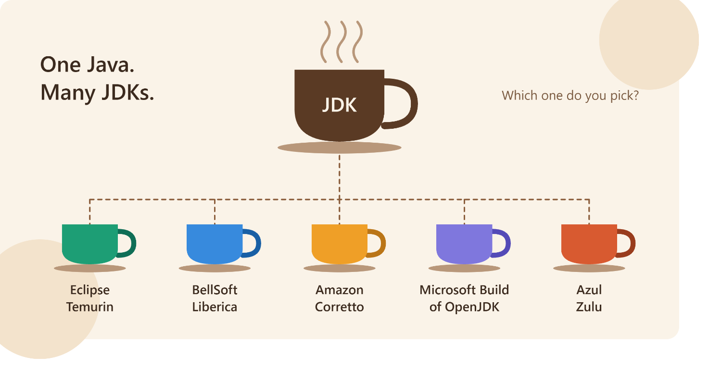

Java & Platform Engineering
What is Java TCK Certification (And Why Should Developers Care)?
If you have downloaded a Java Development Kit (JDK) lately, you have probably noticed there isn’t just one "Java" anymore. Eclipse Temurin, BellSoft Liberica, Amazon Corretto, Microsoft Build of OpenJDK and Azul Zulu are just a few of the distributions available.

All of these distributions are built from the same upstream OpenJDK source code. Yet, every reputable vendor proudly displays a specific badge on their download page: TCK Certified. Here is what that means and why it matters for applications.
What Does TCK Stand For?
TCK stands for Technology Compatibility Kit. For Java SE, it is often referred to as the JCK, or Java Compatibility Kit.
Maintained by Oracle as the steward of the Java platform, the TCK is an official suite of automated tests, tools and documentation designed to verify that a Java runtime strictly adheres to the Java SE Specification.
Think of it as a seal of authenticity. OpenJDK is open source, so vendors can add custom patches, tune garbage collectors or optimize builds for their cloud infrastructure. Passing the TCK proves that, despite those vendor-specific optimizations, the JDK still behaves like standard Java.
What Does the TCK Actually Test?
The Java TCK is an exhaustive verification gauntlet consisting of more than 150,000 individual tests. To earn certification, a JDK build must pass every applicable test across several dimensions:
- API Compliance: Ensures every standard class, method signature and return type in the Java library matches the official specification.
- JVM Behavior: Verifies bytecode execution, memory management, multithreading and classloading rules.
- Language & Compiler Rules: Confirms that
javaccompiles Java syntax according to the Java Language Specification. - Edge Cases & Error Handling: Tests that exceptions are thrown under the exact conditions defined by the specification, rather than being silently ignored or altered.
Why Does TCK Certification Matter to You?
1. True "Write Once, Run Anywhere" Portability
Java’s famous promise only works if every JVM interprets your bytecode in essentially the same way. With a TCK-certified JDK, you can develop locally on macOS using Liberica JDK, run CI/CD pipelines on Linux using Eclipse Temurin and deploy to AWS using Amazon Corretto without worrying about subtle core runtime discrepancies.
2. Legal Right to the "Java SE" Name
Under Oracle’s licensing and trademark rules, a vendor cannot legally market or label a distribution as "Java SE compatible" unless it has passed the TCK for that specific Java version.
3. Enterprise & Audit Peace of Mind
If you work in fintech, healthcare or government, compliance auditors may require proof that a production runtime meets established standards. TCK certification gives security and legal teams clear evidence that the open-source JDK has undergone a recognized compatibility process.
4. Risk-Free Vendor Switching
Because TCK-certified builds guarantee compatible core behavior, teams are not locked into a single JDK vendor. A migration from Oracle JDK to a free OpenJDK distribution or a switch between cloud providers is less likely to introduce runtime compatibility surprises.
What Happens If a JDK Is Not TCK-Certified?
A non-certified OpenJDK build isn't necessarily broken. It is still based on open-source code and will likely run standard applications correctly. However, without TCK verification, there is no independent compatibility guarantee that a vendor’s patch, OS packaging or experimental JVM change did not alter an edge case of the Java specification.
For personal side projects, an uncertified build may be acceptable. For production workloads, selecting a TCK-certified distribution is an easy way to eliminate a significant class of hard-to-debug runtime issues.
Popular TCK-Certified JDK Distributions
Many major free OpenJDK distributions are TCK-certified, including:
- Eclipse Temurin by Adoptium
- Liberica JDK by BellSoft
- Amazon Corretto
- Microsoft Build of OpenJDK
- Azul Zulu
- Red Hat build of OpenJDK
Certification applies to specific distributions and versions, so production teams should verify the exact build and target Java version with the vendor.
Final Thoughts
It is not a replacement for security updates, performance testing or application-level quality checks. It is the compatibility foundation that makes portability claims meaningful.
#Java #JDK #OpenJDK #TCK #JCK #PlatformEngineering #SoftwareArchitecture